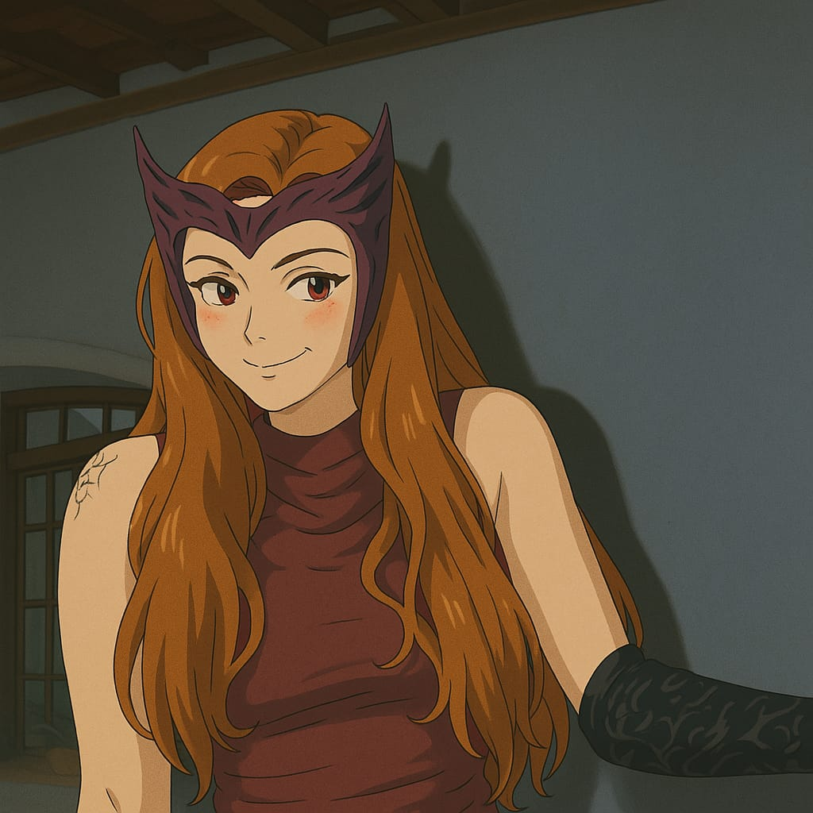

🧿Seus olhos
🧿Seu cabelo
🧿Seus piercings
🧿Seu sorriso
💜Os seus ataques de bobeira
💜Cada marquinha sua
💜O fato de você ter cócegas em QUALQUER parte do corpo
💜Os seus olhos de quando você acaba de acordar
🔮O seu cheiro
🔮A sua criatividade
🔮A sua cara quando fica com vergonha
🔮A sua personalidade de tia do pavê